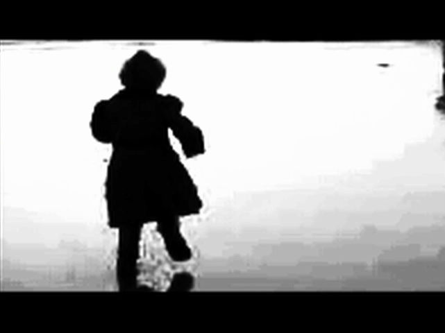
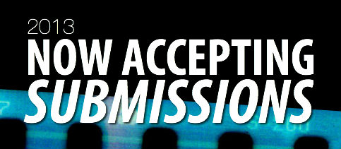
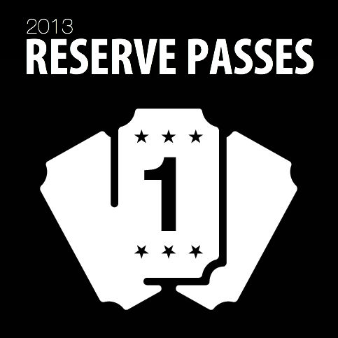
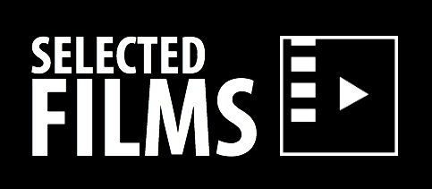

| HOME | FESTIVAL | CONFERENCE | SUBMIT | SPONSORS | ATTEND |
|  | Baptism, Experimental Dir. Michelle Byron and Jacob Mertens University of North Carolina Wilmington A found footage experimental film that explores the abstract beauty of baptism, a process in which we return to a state of creation when all life was unified. |
|  |
|  |
|  |
| Archives |
| 2012 Films |
| ABOUT | FESTIVAL | CONFERENCE | SUBMIT | EVENTS | ATTEND | SPONSORS | PRESS |
| Mission The Awards Meet the Staff FAQ Contact Us |
Film Selections Archives 2012 |
Paper Selections Archives 2012 |
Overview Forms & Guidelines |
1Hr:1Tk Video Race Screening Tour The After Party |
Event Schedule Reserve Passes Parking & Venues Travel & Lodging |
2013 Sponsors Become a Sponsor |
In the News Visions PR |